Teachwith confidence
- Internationally Valid Certificate
- Take Care of Family and Friends
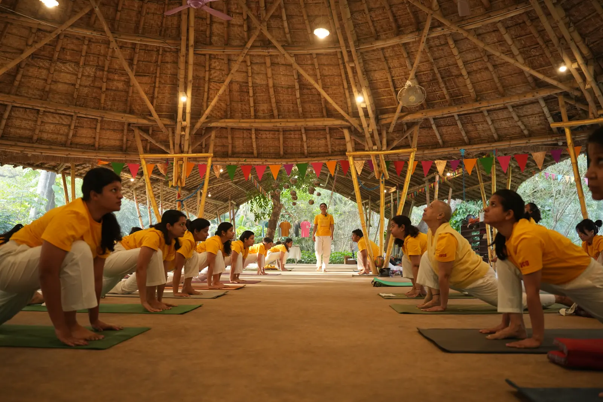

Sivananda Yoga Centre, Gurgaon (SYCG) was set up on 1 April 2004 to share the teaching and practice of an authentic, ancient system of yoga. For 20 years and counting, the Centre has helped ordinary people improve physical health, mental wellbeing, balance, and harmony through a traditional way of practice.
The Centre has taught over 50,000 yoga classes and now welcomes students through daily classes, special courses, retreats, teacher training programmes, and online learning on Zoom. Designed as a truly hybrid experience, this TTC combines live online learning with in-person teaching and indoor practice at H 53, South City 1, Gurgaon, bringing the same lineage-based training to both groups.
The course is guided by Arun Pandala, founder-acharya of SYCG and one of India's senior-most Sivananda trained teachers, with Dyutima Goel as lead faculty for TTC Level 1. Together with the teaching team, they present yoga as a complete way of life through asana, pranayama, meditation, philosophy, selfless service, and the discipline required to teach others.
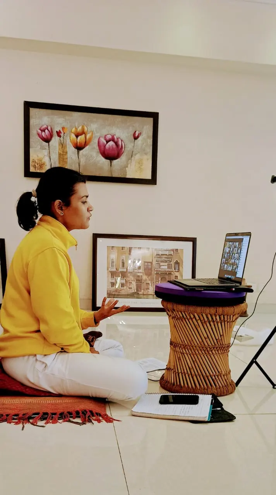
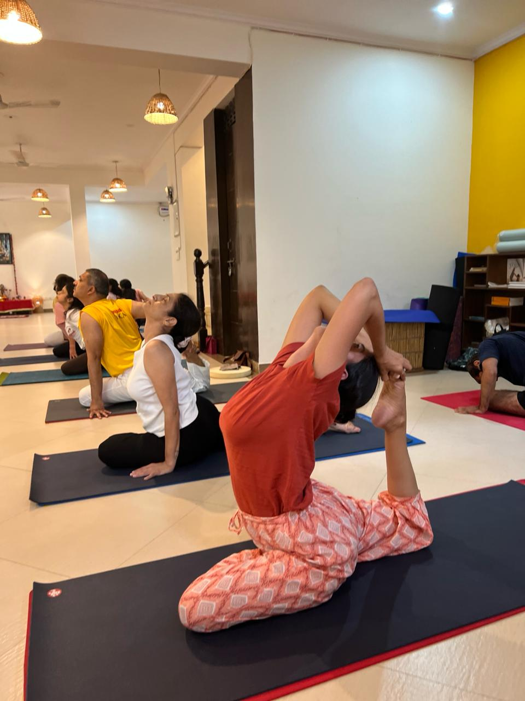
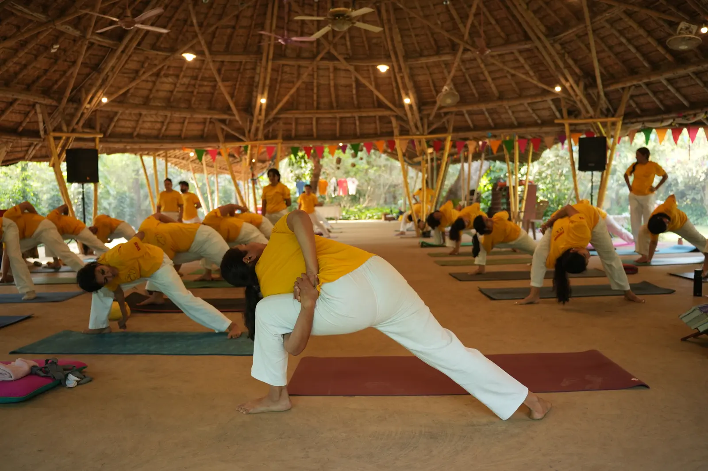
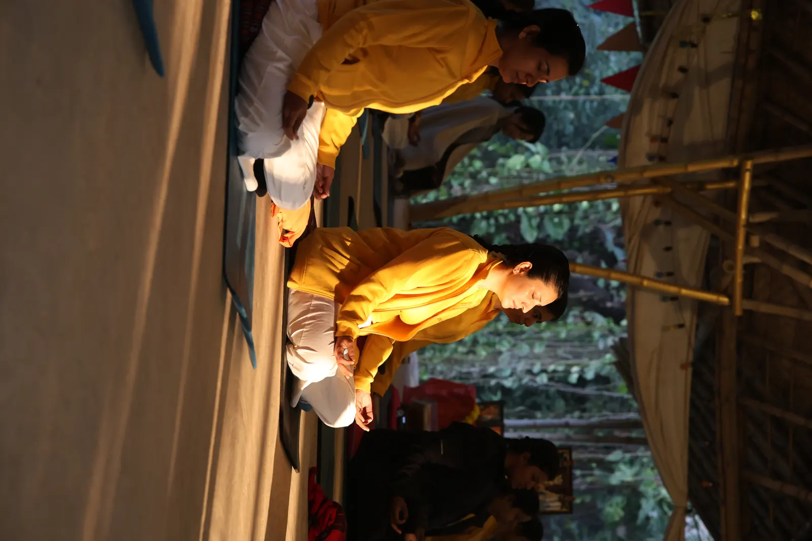
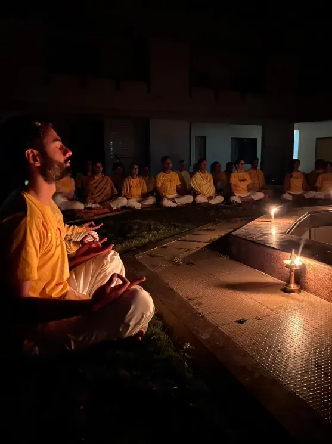
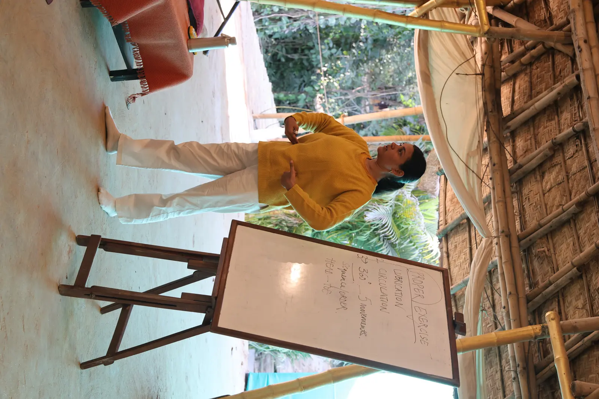
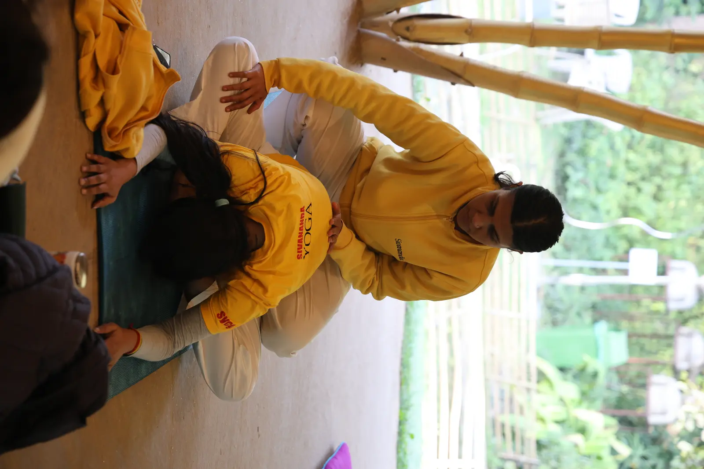

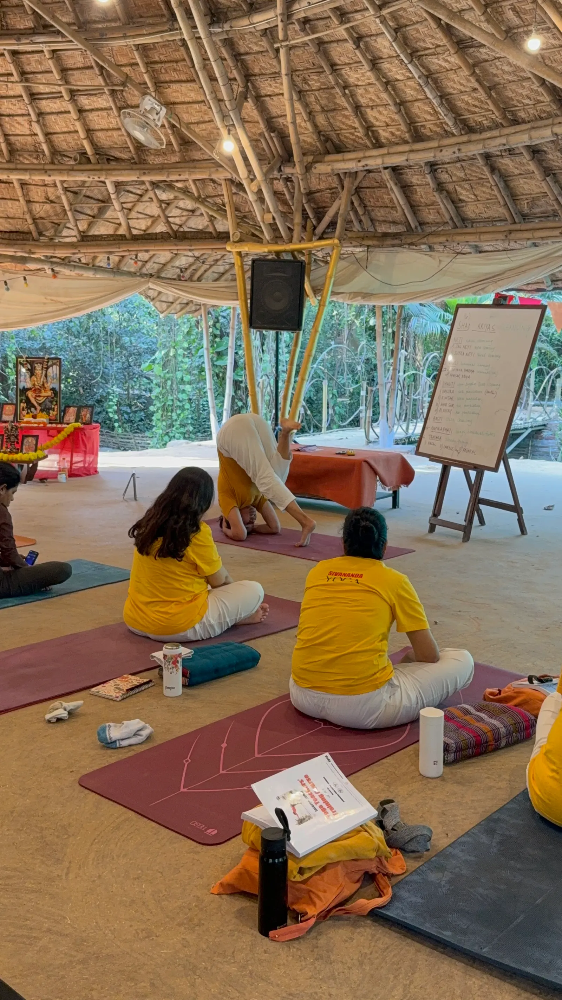
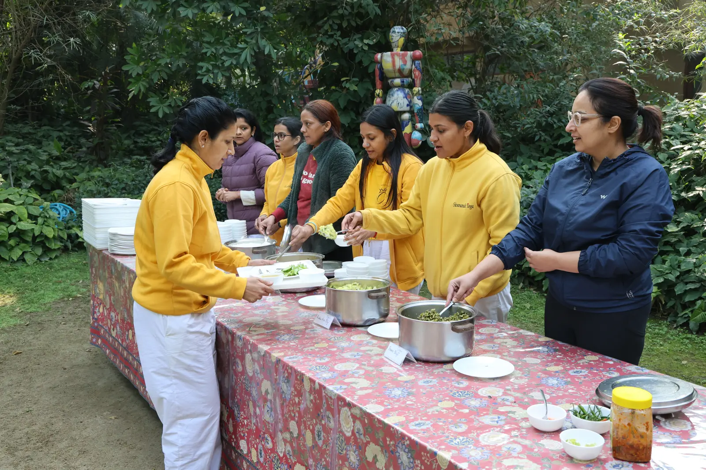
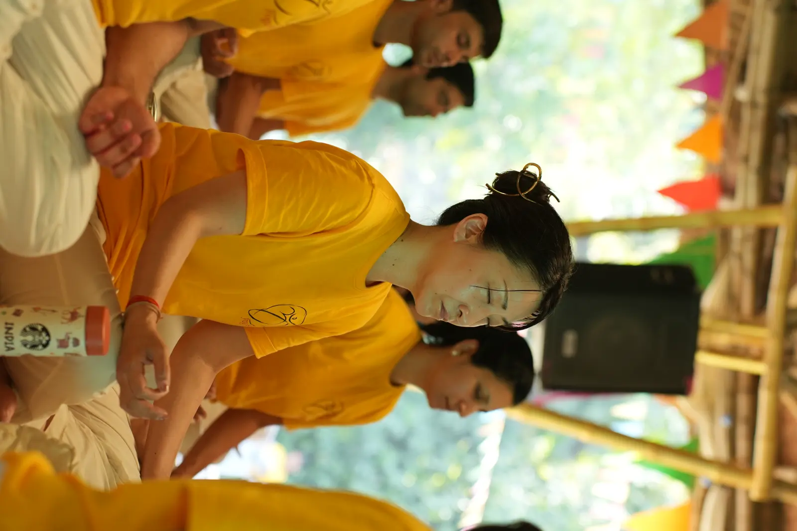
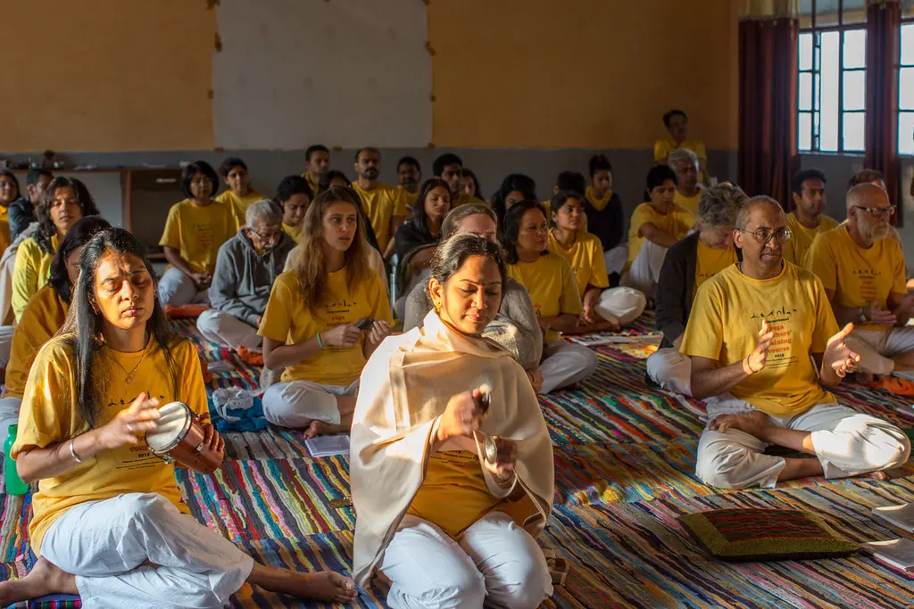
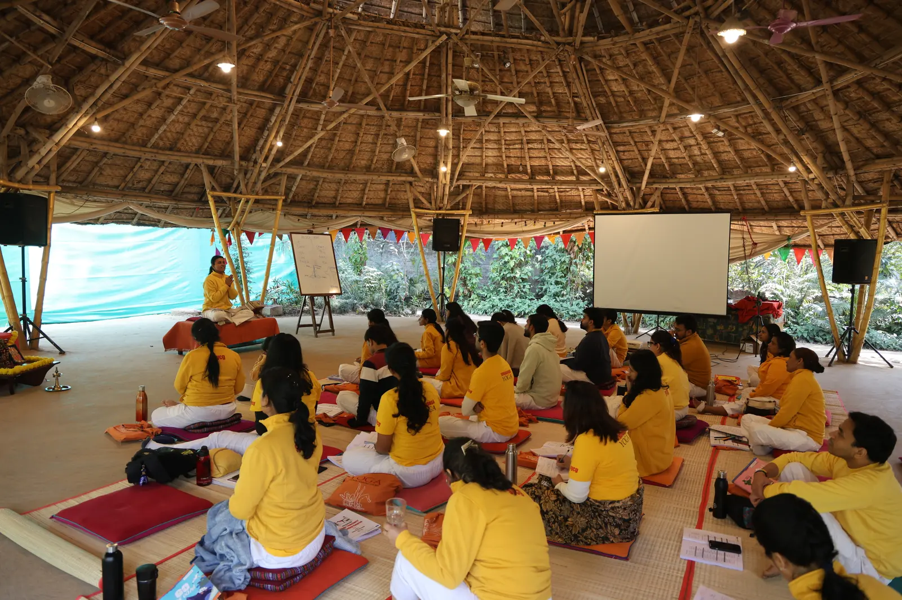
A disciplined training rhythm with practice, study, chanting, and rest woven through the week.
6.15 am Online room opens, camera on, audio off
6.30 am Asana and Pranayama class
8.30 am Tea and comfort break
8.45 am Main Lecture on philosophy
10.15 am Brunch (room is closed)
2.15 pm Meditation, chanting, arati
3.45 pm Comfort break
4.00 pm Asana and Pranayama class
6.15 pm Room closed for the day
* Attendance at all activities is mandatory
Monday 6.30 - 7.30 am Chanting/Bhagavad Gita
Tuesday 6.30 - 7.30 am Asana and Pranayama class
Wednesday FREE DAY
Thursday 6.30 - 7.30 am Asana and Pranayama class
Friday 6.30 - 7.30 am Chanting/Bhagavad Gita
* Weekday classes are online only. Attendance at all activities is mandatory.
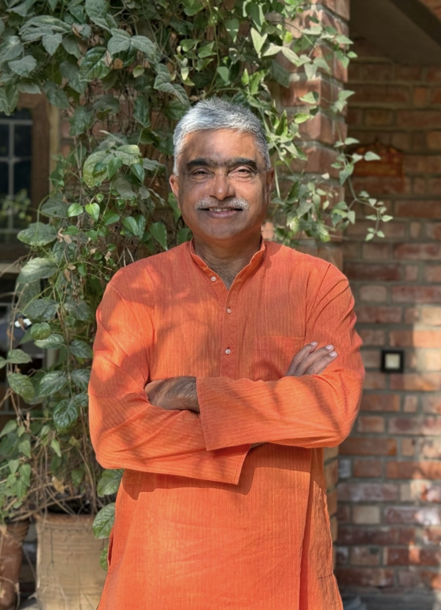
Founder-Acharya · Head Mentor
Arun Pandala is one of the senior-most Sivananda teachers in the world. He did his teacher training in 1995, and has since mentored thousands of students and teachers across India and around the world. Arun is the founder-acharya of Sivananda Yoga Centre, Gurgaon, set up in 2004 to bring an authentic lineage of yoga to all people.
Arun teaches with great energy, vast experience, deep insight, simple wisdom and dry humour. A teacher of teachers and a grandmaster in the field of yoga, he is the head mentor and guide to the Yoga Teacher Training Course.

Lead Faculty · TTC Level 1
Getting star reviews sprinkled with delight and coated with the all-abiding love of her students has been a hallmark of Dyutima Goel’s journey as a yoga teacher since 2011. Strong, agile, superbly flexible and one hundred per cent dedicated to personal practice, Dyutima walks the talk.
She wins hearts and commitment to yoga from those whom she teaches with her unique sense of how to awaken someone’s inner potential. She is one of India’s most admired and highly acclaimed Sivananda teachers and is the lead faculty in the Yoga Teacher Training Course Level 1.
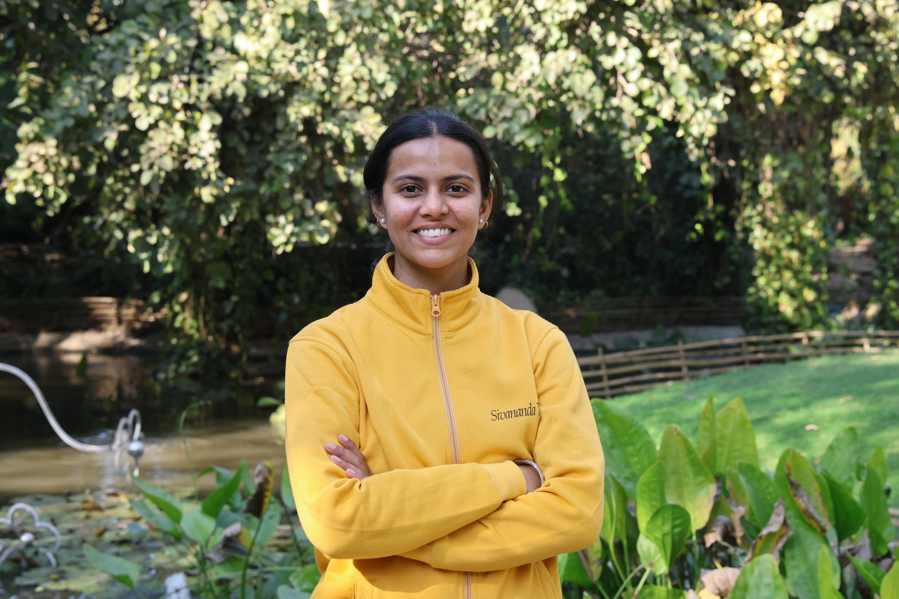
Yoga Teacher

Vedanta & Yoga Philosophy
Raghav Kumar is a senior member of the Vedanta community in India. A direct disciple of Swami Dayananda, Raghav makes the complex subjects of Vedanta, Yoga philosophy, and the Bhagavad Gita digestible for a common person.
His ability to translate the fundamentals of the Vedas and the Upanishads into practical anecdotes brings the ancient scriptures alive. His students often continue to connect with him for years after the TTC is over!

Pre-natal Yoga Specialist
Anita Bahl has trained nearly 1000 women in pre-natal yoga since 2010, making her one of India’s senior teachers in Yoga during pregnancy.
Her students have wonderful things to say about Anita and her classes — during pregnancy, child-birth and after. She will present the Sivananda pre-natal yoga class during the TTC.
Choose the fee category that applies to your location and teaching background.
(from another school)
(from another school)
To reserve your place in the yoga retreat, kindly make a deposit of 25% of the course fee and submit the application form.
Please note, this deposit is non-refundable and non-adjustable. Once you make the payment, please send a screenshot on WhatsApp or email to the below mentioned details.
Let us know if you have any questions. We will be happy to assist.

The TTC program has been nothing short of a transformational journey. The classes we engaged in, from Asanas to pranayama to meditation and all the lectures have helped me cultivate greater discipline, balance and calm in my day to day life. Physically too, I am a lot more energetic and stronger. I am amazed at how the principles and philosophy of yoga learnt during the program has got effortlessly and seamlessly integrated into my daily life making me more self aware, mindful and productive. It truly was one of the most amazing experiences of my life, layered with learnings, some of which I am still processing.
Kudos to the SYGC team whose passion and commitment is just unparalleled. It's Arun and the team of teachers and their expertise and dedication that make this program stand apart. I would highly highly recommend this program to anyone looking to deepen their practice and improve the quality of their life.
These videos explain how the training works, address common questions, and offer a practical sense of what to expect before applying.
A wonderful programme of ongoing teacher training begins after you graduate.
After 11 April 2027, you can participate in Sivananda Yoga Centre, Gurgaon’s daily open classes as a student and also as a volunteer teacher. You will be able to practice, observe, supervise, and eventually teach classes in a practical environment, beyond the theoretical classroom of the teacher’s course.
You will have an opportunity to improve your own daily practice and learn how to look after students under the supervision of senior teachers. This connection to the Sivananda community is open to all Sivananda TTC graduates, from anywhere in India or abroad.
A Yoga Teacher Training Course is an immersive and systematic study of yoga that combines practical training, philosophy, anatomy, meditation, breathwork, teaching methodology, and personal development. While the course prepares students to teach yoga, it is equally a journey of self-discovery and transformation.
No. Many participants join the TTC for personal growth, improved health, deeper understanding of yoga, stress management, meditation, spiritual exploration, and lifestyle transformation. A significant number of graduates never teach professionally and still consider the training one of the most valuable experiences of their lives.
The Sivananda tradition teaches yoga as a complete way of life rather than only a physical exercise system. The course is based on the Five Points of Yoga:
Students learn not only how to practise yoga, but how to live yoga.
Participants often report:
Established in 2004, SYCG is one of India's leading centres dedicated to preserving and sharing the teachings of classical yoga in the Sivananda tradition. The centre offers yoga classes, teacher training programmes, retreats, workshops and continuing education programmes for students from India and around the world.
The teachings originate from Swami Sivananda, one of the most influential yoga masters of the twentieth century, and were brought to an international audience by his disciple, Swami Vishnudevananda. The Sivananda tradition is one of the most respected and established yoga lineages in the world.
Yes. The curriculum preserves the traditional teachings of yoga while presenting them in a structured and practical format suitable for modern students. Equal emphasis is placed on physical practice, philosophy, meditation, breathwork, ethics and lifestyle.
Anyone with a sincere interest in yoga and a willingness to learn may apply. Participants come from diverse backgrounds including healthcare, education, business, fitness, wellness, psychology, hospitality, technology, and the arts. Yoga teachers from other traditions are also welcome.
No. While previous practice is helpful, it is not mandatory. The most important requirements are commitment, openness, curiosity and consistency.
Absolutely. Flexibility is a result of practice, not a prerequisite for it.
Applicants should generally be adults. Beyond that, there is no fixed upper age limit provided students are medically fit to participate in the programme. Participants younger than 18 years may be accepted on a subjective selection basis. The certificate of completion will be handed over only after they turn 18 years of age.
Yes. The course assumes no prior knowledge and welcomes students from all cultural, religious and professional backgrounds. Everyone will be treated as a newcomer and taught all necessary foundational material.
The course includes:
Yes. Meditation and pranayama are central pillars of the Sivananda tradition and form an essential part of the training.
Considerable emphasis. The TTC aims to help students understand not only how yoga works, but why it works. Philosophy provides the framework that connects all aspects of yoga practice.
The curriculum, faculty, assessments and certification standards remain the same. The primary difference is the mode of delivery. Online students enjoy greater flexibility while learning from their own homes.
Yes. Teachers observe students during practical sessions and provide verbal guidance, demonstrations and individual feedback. Breakout rooms are used so individuals and smaller groups can be taught and corrected more directly.
Yes. Students who successfully complete all requirements receive the same certification regardless of delivery format.
Yes. Teacher training requires active participation and attendance is an important component of certification. Those joining online from different time zones may be given recordings. SYCG will have a method of assessing whether students have gone through the recordings so attendance can be confirmed.
Students are expected to attend all sessions. In cases of genuine emergencies, the faculty will advise on possible alternatives or make-up requirements.
Where available, recordings are intended as supplementary learning resources and not as a replacement for live participation. This applies to students in India. Students in different time zones may be given the option of recordings after assessment of genuineness.
Students should expect to devote additional time to:
While the TTC is an intensive programme, active participation in the required time that makes up the 200 hours is sufficient. The real learning begins once the course is over, through the above practices sustained over time.
Assessment may include:
Alternative arrangements may be considered on a case-by-case basis according to SYCG policy.
Students who successfully complete the programme receive an internationally recognised Yoga Teacher Training Certificate issued by Sivananda Yoga Centre, Gurgaon. This is recognised by Yoga Alliance, with whom successful participants are encouraged to register after the course.
The TTC conducted by SYCG is designed according to internationally accepted teacher-training standards and may support registration with relevant professional yoga organisations where applicable. Students should verify local teaching requirements in their country of residence.
Yes. The TTC provides the foundational knowledge and practical skills required to begin teaching yoga responsibly and confidently. Effective teaching continues to develop through ongoing study and experience. Please check with us for ongoing training and internship once the course is over. SYCG has a long-term desire and deep commitment to building the abilities of those who graduate from its courses.
Yoga regulations vary from country to country. The TTC provides a strong professional foundation, but students should familiarise themselves with local requirements wherever they intend to teach.
No certification can guarantee employment. However, graduates often go on to teach in studios, schools, wellness centres, retreats, corporate programmes and private settings.
SYCG also has a Karma Yoga programme of assisting, teaching and practising in the daily online yoga programme and courses, giving graduates a chance to be in the community of students and teachers worldwide.
Many students experience improvements in flexibility, strength, posture, breathing, stress management, sleep quality and overall wellbeing. The TTC is educational in nature and should not be viewed as a substitute for medical care.
Very much so. One of the defining characteristics of the Sivananda tradition is its emphasis on meditation, breathwork, self-development and spiritual growth alongside physical practice.
Absolutely. Many students join purely to deepen their personal practice and understanding of yoga.
Prospective students may request testimonials, reviews or opportunities to connect with alumni where available. SYCG can put you in touch with them as possible.
Yes. One of the most valuable aspects of a TTC is the supportive community that develops among participants and teachers during the programme.
Prospective students are encouraged to attend classes, workshops, talks or orientation sessions whenever possible before making a decision. There are no trial sessions for the TTC itself. SYCG will conduct webinars that give you a chance to interact with the faculty and staff and seek clarifications about the course.
This course is ideal for anyone who wishes to explore yoga beyond physical postures and is prepared to engage sincerely with a transformative learning experience. The most important qualification is not flexibility, fitness or prior knowledge. It is the willingness to learn, practise and grow.